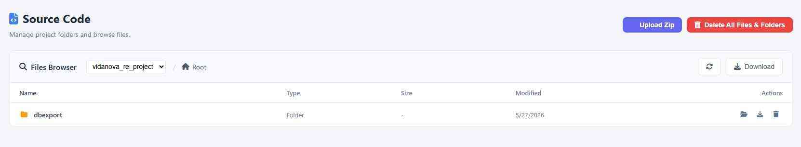
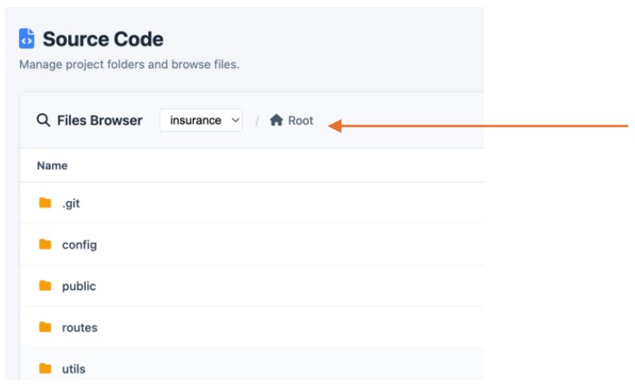

Source Code
The Source Code dashboard is where your project transitions from high-level "Concept" to actual digital infrastructure. This is a live file system where Think4ever manages every script, style, and configuration file of any project.

Navigation & Structure
The Files Browser provides a standard, intuitive directory structure. In your current view (the insurance folder), the AI has organized the project into logical sections:
- config/: Contains environment settings and database connection strings.
- public/: The "Front Door" of your app—houses the HTML, CSS, and images the user actually sees.
- routes/: The "Traffic Controller"—defines the paths (URLs) for your application (e.g., /dashboard or /expenditures).
- utils/: Helper functions and small scripts that handle repetitive tasks.
Anatomy of Your Project Files
Every file listed includes its Type, Size, and the Last Modified date, giving you a clear audit trail of development.
| Notable File | Description |
|---|---|
| db.sql | A snapshot of your database structure, often created by the "Export to Source" function. |
| insuranceserver.js | The main entry point for your backend server—this is the "brain" that connects your UI to your data. |
| package.json | A manifest file that lists all the technical dependencies your project needs to run. |
| README.md | The project's documentation, detailing how to install and use the application. |
In the Source Code section, navigating and managing your technical assets is designed to be as intuitive as a standard desktop environment, but with high-end developer tools built right in.

Navigation & Tracking
- Breadcrumb Navigation: Use the dynamic path links (e.g., Root / public / assets) at the top of the browser to move instantly between parent and child directories.
- File Metadata: Every asset is listed with its Name, Type (JS, HTML, CSS, etc.), Size, and the exact Timestamp of the last modification. This provides a clear audit trail for every change the AI agents make.
Individual File Action
For surgical control over your application's files, each row in the browser offers four primary actions:
-
View — Read-Only Mode
- The Function: Opens a quick-look preview of the file's content.
- The Utility: Perfect for a "spot check" to verify that a logic fix or a UI update was applied correctly without accidentally changing anything.
-
Edit — Full-Screen Code
Editor
- The Function: Launches a professional-grade development environment featuring the high-contrast Catppuccin theme.
- The Utility: Features full syntax highlighting, making it easy to manually tweak code or add custom comments. It's the ultimate tool for "Final Form" personalization.
-
Download — Local Export
- The Function: Instantly saves the specific file to your computer.
- The Utility: Use this if you need to share a specific script with a collaborator or want to keep a local backup of a critical configuration file like db.sql.
-
Delete — Secure Removal
- The Function: Removes the file from the project directory.
- The Utility: Includes a confirmation step to prevent accidental loss of data. Use this to prune legacy files or experimental scripts that are no longer needed.